01 / 32 · 一、问题与实验设计
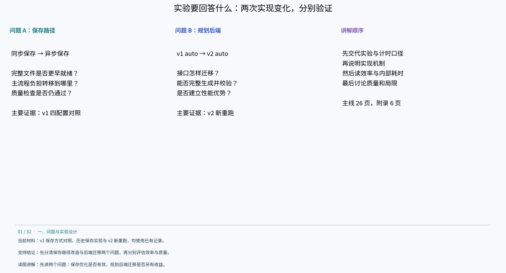
展开本页实验说明与讲解
当前材料：v1 保存方式对照、历史保存实验与 v2 新重跑，均使用已有记录。
支持结论：先分清保存路径改造与后端迁移两个问题，再分别评估效率与质量。
读图讲解：先讲两个问题：保存优化是否有效，规划后端迁移是否另有收益。
先定义因变量：最终就绪耗时、记录成功吞吐和末态合格吞吐。保存改造与规划后端迁移要分别讨论，否则无法判断结果来自调度变化还是求解路径变化。
下一页：26-experiment-matrix
02 / 32 · 一、问题与实验设计
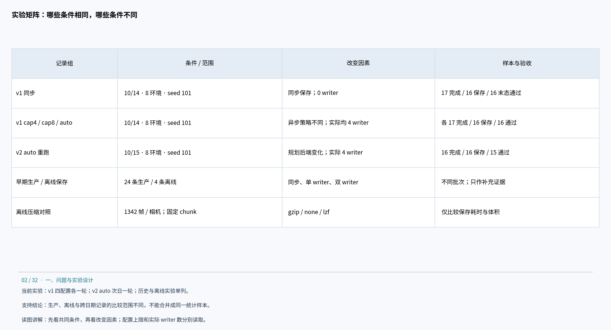
展开本页实验说明与讲解
当前实验：v1 四配置各一轮；v2 auto 次日一轮；历史与离线实验单列。
支持结论：生产、离线与跨日期记录的比较范围不同，不能合并成同一统计样本。
读图讲解：先看共同条件，再看改变因素；配置上限和实际 writer 数分别读取。
v1 主实验保持任务、8 环境和 seed 101，各组保存 16 条，阶段统计包括 17 个完成 episode 中的 1 次失败。v2 有 16 个完成 episode，且测试日期不同。没有重复试验分布，图中没有置信区间，也不能判定细小差异的显著性。
下一页：27-metrics
03 / 32 · 一、问题与实验设计
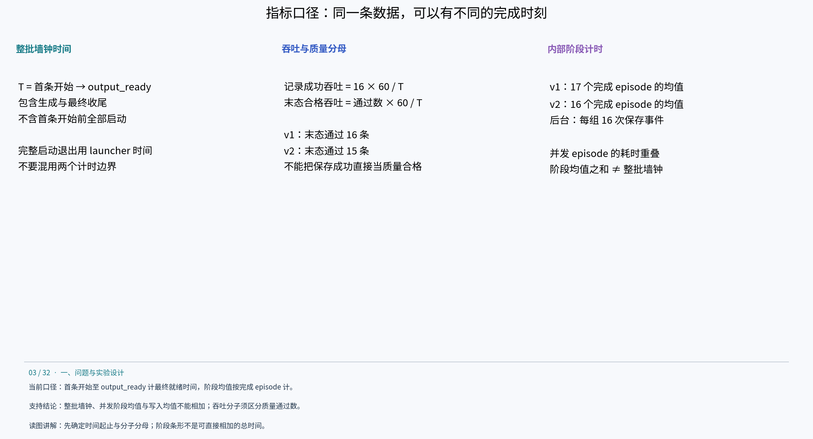
展开本页实验说明与讲解
当前口径：首条开始至 output_ready 计最终就绪时间，阶段均值按完成 episode 计。
支持结论：整批墙钟、并发阶段均值与写入均值不能相加；吞吐分子须区分质量通过数。
读图讲解：先确定时间起止与分子分母；阶段条形不是可直接相加的总时间。
最终就绪时间不含首条开始前的全部启动成本；若讨论整次启动到退出，应使用另列的 launcher_seconds。记录成功吞吐为 16×60/T；末态合格吞吐使用通过条数作分子，v2 应为 15×60/T。
下一页：19-version-boundaries
04 / 32 · 二、实现与机制
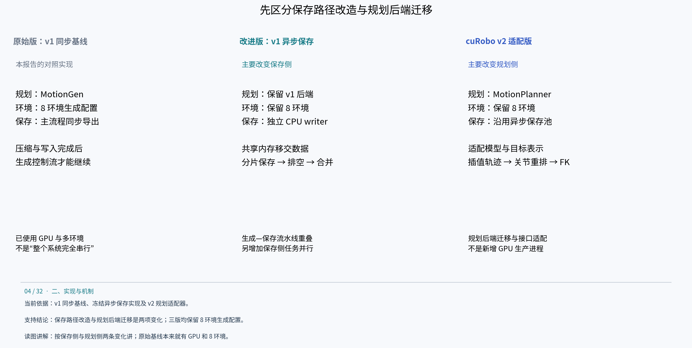
展开本页实验说明与讲解
当前依据：v1 同步基线、冻结异步保存实现及 v2 规划适配器。
支持结论：保存路径改造与规划后端迁移是两项变化；三版均保留 8 环境生成配置。
读图讲解：按保存侧与规划侧两条变化讲；原始基线本来就有 GPU 和 8 环境。
把三列理解为本项目的测试实现，而非三个官方发行版本。第一步保留规划后端而改变保存路径，第二步保留异步保存而迁移规划后端，后续实验也按这两条比较关系展开。
下一页：20-version-control-flow
05 / 32 · 二、实现与机制
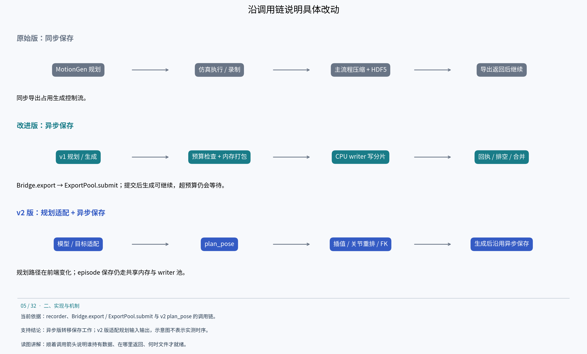
展开本页实验说明与讲解
当前依据：recorder、Bridge.export / ExportPool.submit 与 v2 plan_pose 的调用链。
支持结论：异步版转移保存工作；v2 版适配规划输入输出，示意图不表示实测时序。
读图讲解：顺着调用箭头说明谁持有数据、在哪里返回、何时文件才就绪。
异步链中数据提交返回与后台保存完成是两个时刻，图中箭头只表示调用和依赖关系。v2 的前端适配改变目标及轨迹表示，保存侧仍沿用已有的分片、回执和合并流程。
下一页：00-code-methods
06 / 32 · 二、实现与机制
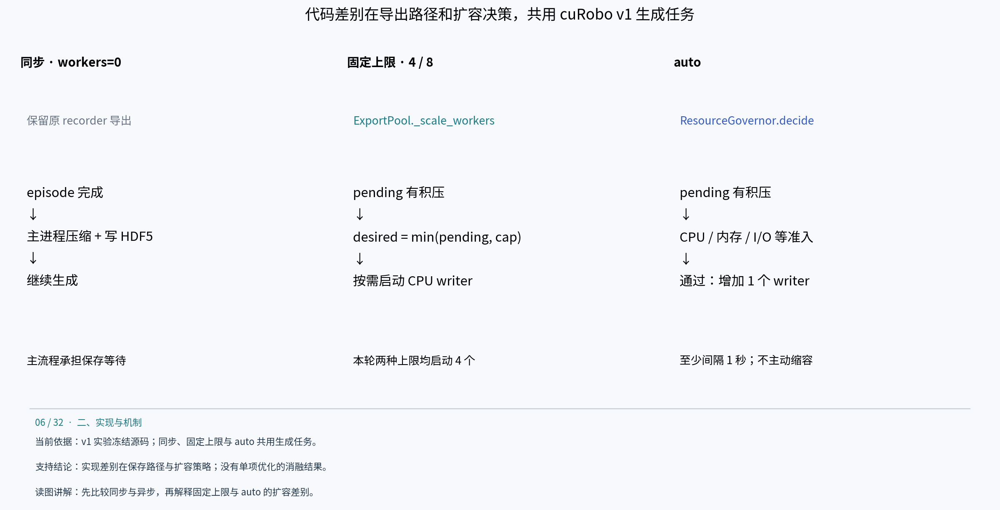
展开本页实验说明与讲解
当前依据：v1 实验冻结源码；同步、固定上限与 auto 共用生成任务。
支持结论：实现差别在保存路径与扩容策略；没有单项优化的消融结果。
读图讲解：先比较同步与异步，再解释固定上限与 auto 的扩容差别。
固定上限按积压按需启动进程，auto 根据资源准入逐步扩容。本轮三种异步配置都实际启动了 4 个 writer，因此这组实验并没有测出实际 8 进程对实际 4 进程的差异。
下一页：22-stage-parallelism
07 / 32 · 二、实现与机制
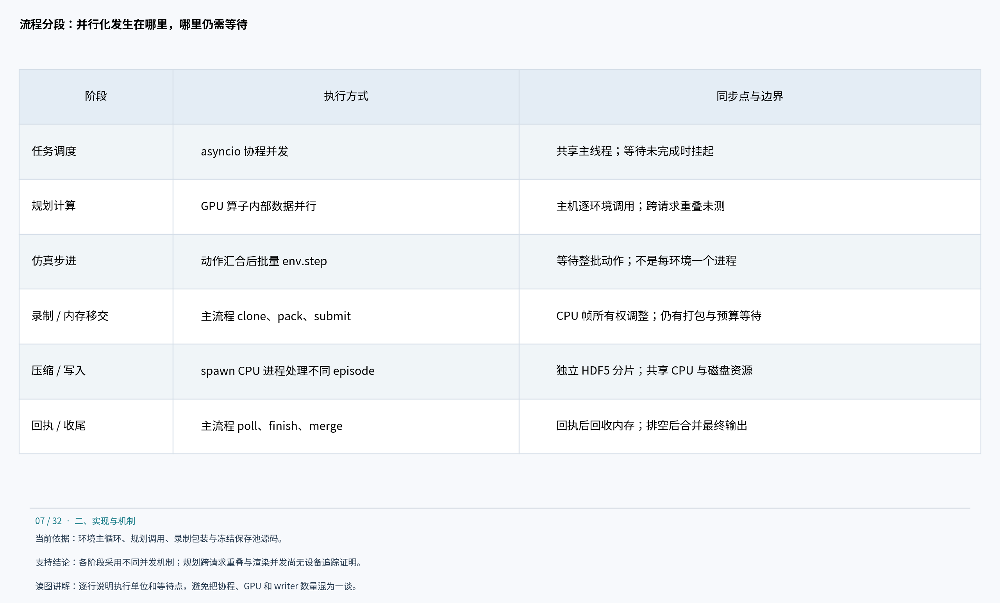
展开本页实验说明与讲解
当前依据：环境主循环、规划调用、录制包装与冻结保存池源码。
支持结论：各阶段采用不同并发机制；规划跨请求重叠与渲染并发尚无设备追踪证明。
读图讲解：逐行说明执行单位和等待点，避免把协程、GPU 和 writer 数量混为一谈。
逐段检查是否真的新增执行者：协程任务没有增加 CPU 执行线程，录制所有权修复也没有新增录制进程。保存池才显式创建 CPU 子进程，GPU 内部的数据并行则由数值算子实现。
下一页：16-process-gpu
08 / 32 · 二、实现与机制
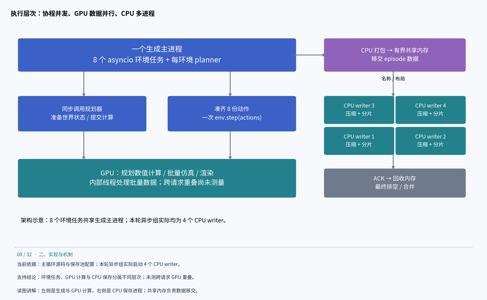
展开本页实验说明与讲解
当前依据：主循环源码与保存池配置；本轮异步组实际启动 4 个 CPU writer。
支持结论：环境任务、GPU 计算与 CPU 保存分属不同层次；未测跨请求 GPU 重叠。
读图讲解：左侧是生成与 GPU 计算，右侧是 CPU 保存进程；共享内存负责数据移交。
GPU 与保存进程共享同一机器的部分资源，但职责不同。writer 不初始化仿真或 CUDA，因此提高 writer 上限不能直接解释为增加 GPU 并行度。
下一页：17-batch-barrier
09 / 32 · 二、实现与机制
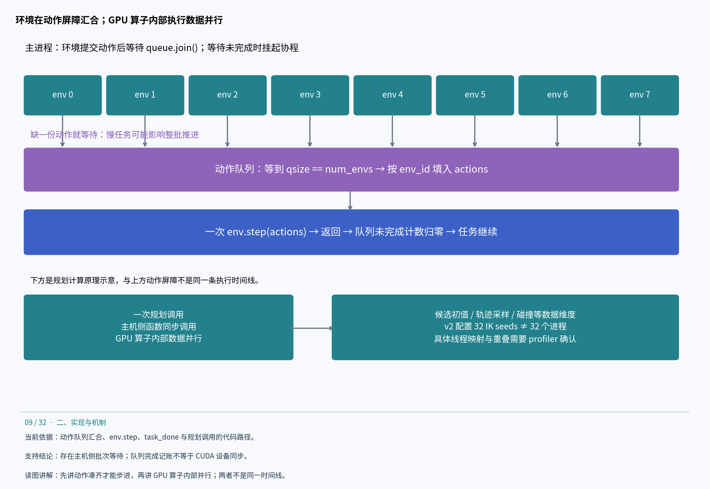
展开本页实验说明与讲解
当前依据：动作队列汇合、env.step、task_done 与规划调用的代码路径。
支持结论：存在主机侧批次等待；队列完成记账不等于 CUDA 设备同步。
读图讲解：先讲动作凑齐才能步进，再讲 GPU 算子内部并行；两者不是同一时间线。
一个环境没有及时准备好动作，就可能延迟整批 env.step。保存占用主控制流可能影响动作提交节奏，这提供了 execution_wait 下降的机制解释，但尚无逐次调用追踪来量化其贡献。
下一页：12-memory-lifecycle
10 / 32 · 二、实现与机制
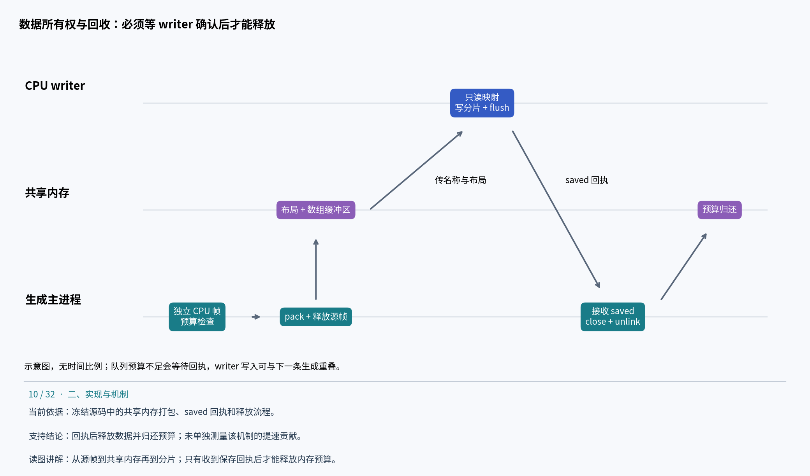
展开本页实验说明与讲解
当前依据：冻结源码中的共享内存打包、saved 回执和释放流程。
支持结论：回执后释放数据并归还预算；未单独测量该机制的提速贡献。
读图讲解：从源帧到共享内存再到分片；只有收到保存回执后才能释放内存预算。
源数据复制到共享内存后，可以释放原 CPU 帧；共享内存本身必须等 saved 回执后才能回收。这两个释放时刻不同，有界预算用于防止生产速度长期超过保存速度而无限积压。
下一页：01-throughput
11 / 32 · 三、v1 效率与耗时解释
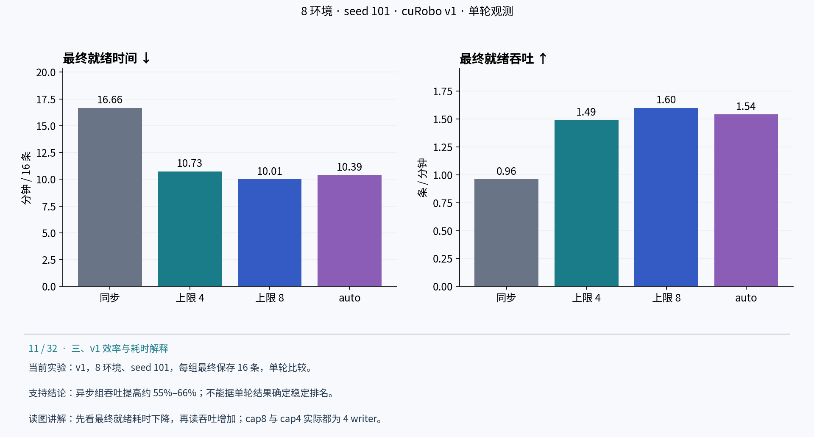
展开本页实验说明与讲解
当前实验：v1，8 环境、seed 101，每组最终保存 16 条，单轮比较。
支持结论：异步组吞吐提高约 55%–66%；不能据单轮结果确定稳定排名。
读图讲解：先看最终就绪耗时下降，再读吞吐增加；cap8 与 cap4 实际都为 4 writer。
相对同步，v1 auto 耗时减少约 37.6%、吞吐提高约 60.2%；两个百分比不同，因为吞吐与固定产量下的耗时成反比。cap8 本轮最快，但与 cap4 实际进程数相同，差值不能解释为进程数翻倍收益。
下一页：05-quality
12 / 32 · 三、v1 效率与耗时解释
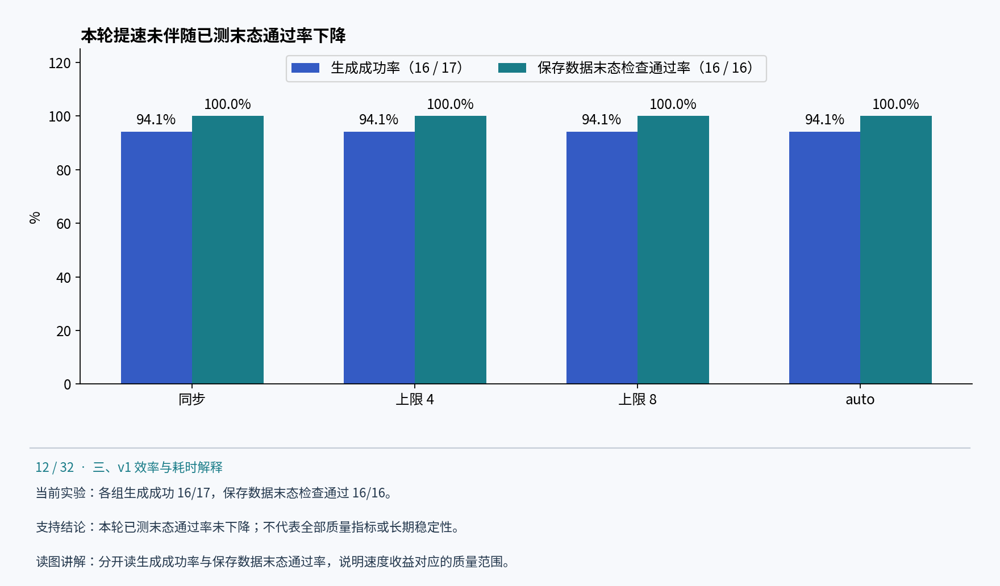
展开本页实验说明与讲解
当前实验：各组生成成功 16/17，保存数据末态检查通过 16/16。
支持结论：本轮已测末态通过率未下降；不代表全部质量指标或长期稳定性。
读图讲解：分开读生成成功率与保存数据末态通过率，说明速度收益对应的质量范围。
生成成功表示任务成功条件被记录，末态通过表示保存后的数据满足检查器条件。两者样本分母不同；本轮末态检查未下降不意味着图像、动态过程和所有质量维度都已验证。
下一页：02-tail
13 / 32 · 三、v1 效率与耗时解释
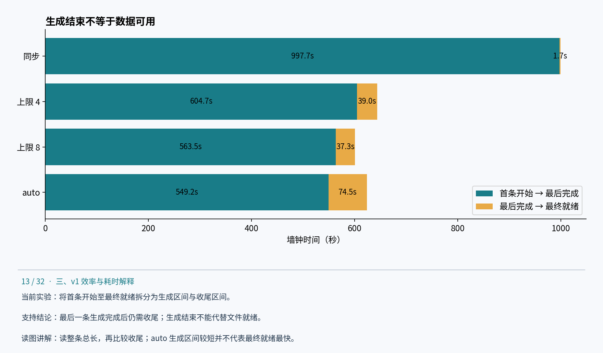
展开本页实验说明与讲解
当前实验：将首条开始至最终就绪拆分为生成区间与收尾区间。
支持结论：最后一条生成完成后仍需收尾；生成结束不能代替文件就绪。
读图讲解：读整条总长，再比较收尾；auto 生成区间较短并不代表最终就绪最快。
同一组条形的两段是互不重叠的整批时间区间，可以相加为最终就绪耗时。这个性质不同于每 episode 的并发阶段均值，因此本图适合讨论生产结束与交付完成之间的差距。
下一页：09-stage-change
14 / 32 · 三、v1 效率与耗时解释
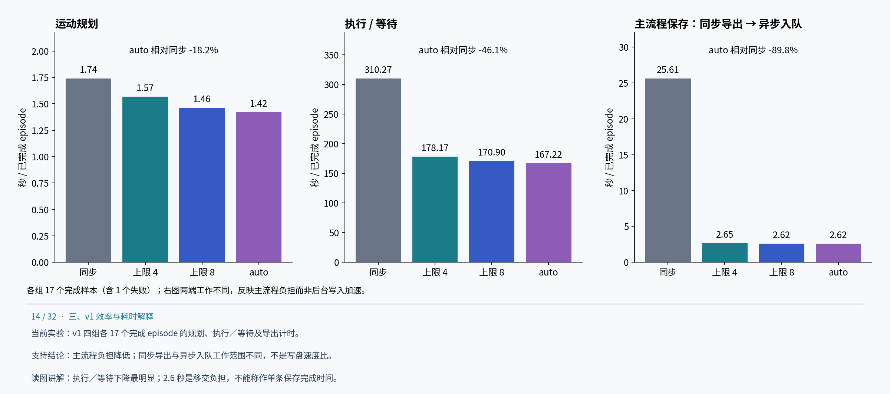
展开本页实验说明与讲解
当前实验：v1 四组各 17 个完成 episode 的规划、执行／等待及导出计时。
支持结论：主流程负担降低；同步导出与异步入队工作范围不同，不是写盘速度比。
读图讲解：执行／等待下降最明显；2.6 秒是移交负担，不能称作单条保存完成时间。
execution_wait 包含执行及等待，其下降与主流程保存阻塞减少相符；它不是纯 GPU 仿真 kernel 时间。同步 export 和异步 enqueue 覆盖不同工作，适合比较主流程负担，不适合直接计算压缩算法加速比。
下一页：10-async-cost
15 / 32 · 三、v1 效率与耗时解释
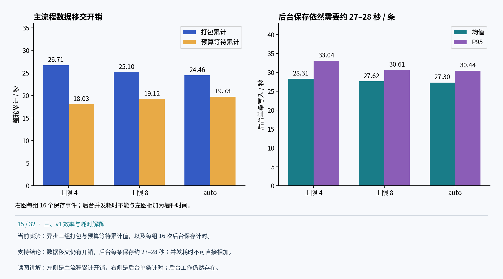
展开本页实验说明与讲解
当前实验：异步三组打包与预算等待累计值，以及每组 16 次后台保存计时。
支持结论：数据移交仍有开销，后台每条保存约 27–28 秒；并发耗时不可直接相加。
读图讲解：左侧是主流程累计开销，右侧是后台单条计时；后台工作仍然存在。
主流程打包与预算等待反映后台方案的额外代价。后台每条保存耗时仍约 27–28 秒，而主流程入队约 2.6 秒；两者计时对象不同，提速来自调度重叠，不是压缩工作降到了 2.6 秒。
下一页：11-tail-detail
16 / 32 · 三、v1 效率与耗时解释
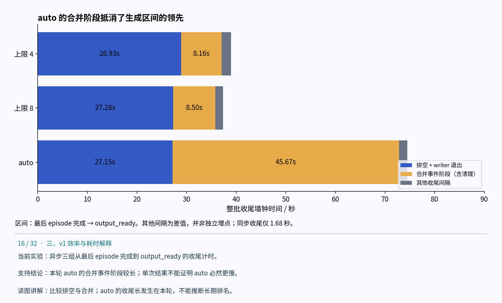
展开本页实验说明与讲解
当前实验：异步三组从最后 episode 完成到 output_ready 的收尾计时。
支持结论：本轮 auto 的合并事件阶段较长；单次结果不能证明 auto 必然更慢。
读图讲解：比较排空与合并；auto 的收尾长发生在本轮，不能推断长期排名。
合并事件计时包含相关清理，不是纯文件复制耗时；其他收尾间隔是墙钟差值，并非独立埋点。此页帮助解释为什么只看生成阶段会改变配置排名。
下一页：04-gpu
17 / 32 · 三、v1 效率与耗时解释
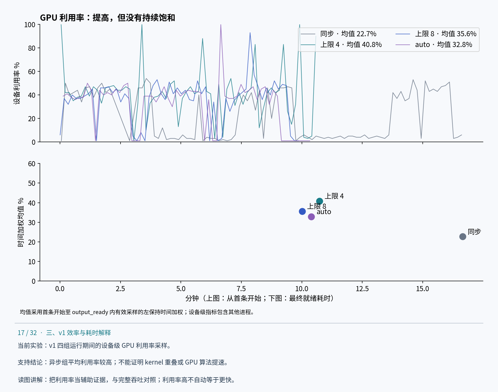
展开本页实验说明与讲解
当前实验：v1 四组运行期间的设备级 GPU 利用率采样。
支持结论：异步组平均利用率较高；不能证明 kernel 重叠或 GPU 算法提速。
读图讲解：把利用率当辅助证据，与完整吞吐对照；利用率高不自动等于更快。
不同异步配置的利用率高低与最终吞吐排名并不完全一致。设备级采样还可能包含其他进程，采样均值无法说明哪个 kernel 占用多少资源，更不能单独判断规划、渲染是否重叠。
下一页：28-evidence-chain
18 / 32 · 三、v1 效率与耗时解释
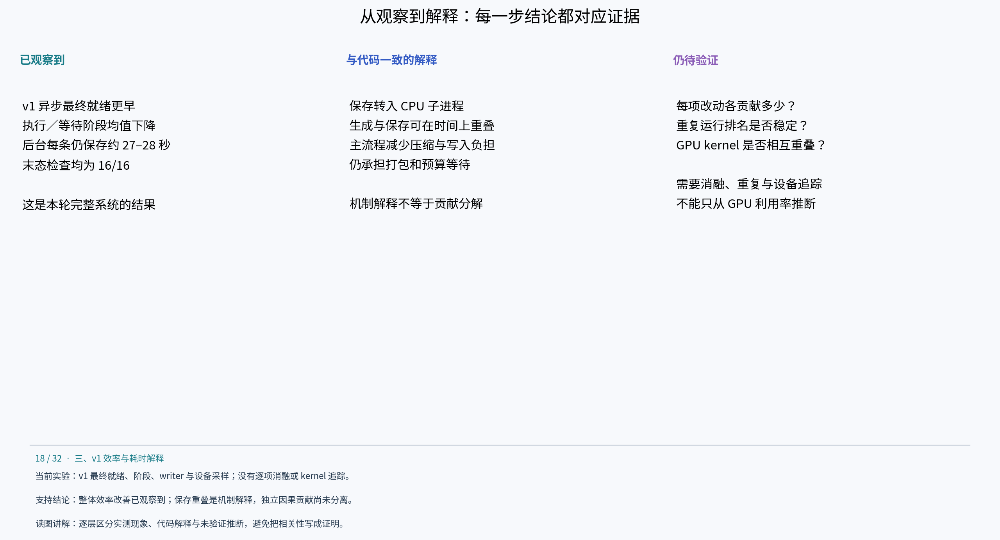
展开本页实验说明与讲解
当前实验：v1 最终就绪、阶段、writer 与设备采样；没有逐项消融或 kernel 追踪。
支持结论：整体效率改善已观察到；保存重叠是机制解释，独立因果贡献尚未分离。
读图讲解：逐层区分实测现象、代码解释与未验证推断，避免把相关性写成证明。
源码给出合理机制：保存移到子进程可减少事件循环被压缩和写入占用的时间。实验给出整体结果：最终就绪更早。二者结合仍不能量化内存修复、进程数、合并策略各自的独立收益，需要消融与追踪。
下一页：24-library-vs-integration
19 / 32 · 四、v2 迁移与实验
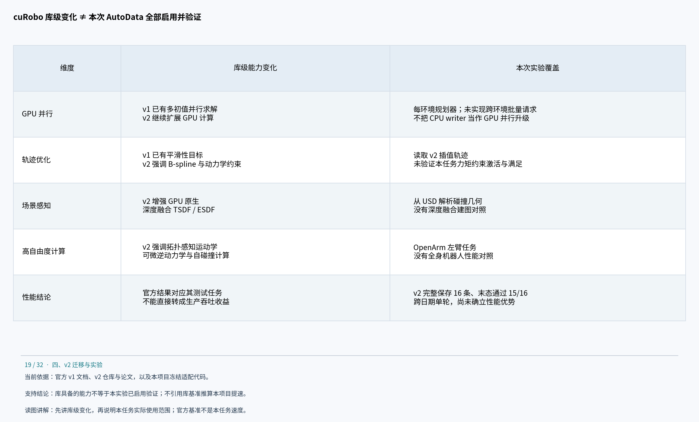
展开本页实验说明与讲解
当前依据：官方 v1 文档、v2 仓库与论文，以及本项目冻结适配代码。
支持结论：库具备的能力不等于本实验已启用验证；不引用库基准推算本项目提速。
读图讲解：先讲库级变化，再说明本任务实际使用范围；官方基准不是本任务速度。
本实验用 USD 碰撞几何和 OpenArm 左臂任务，不覆盖深度融合建图或全身规划。因此只讲官方能力差异与当前使用范围，不把新库所有能力列为本次已经产生收益的优化。
下一页：23-exact-interfaces
20 / 32 · 四、v2 迁移与实验
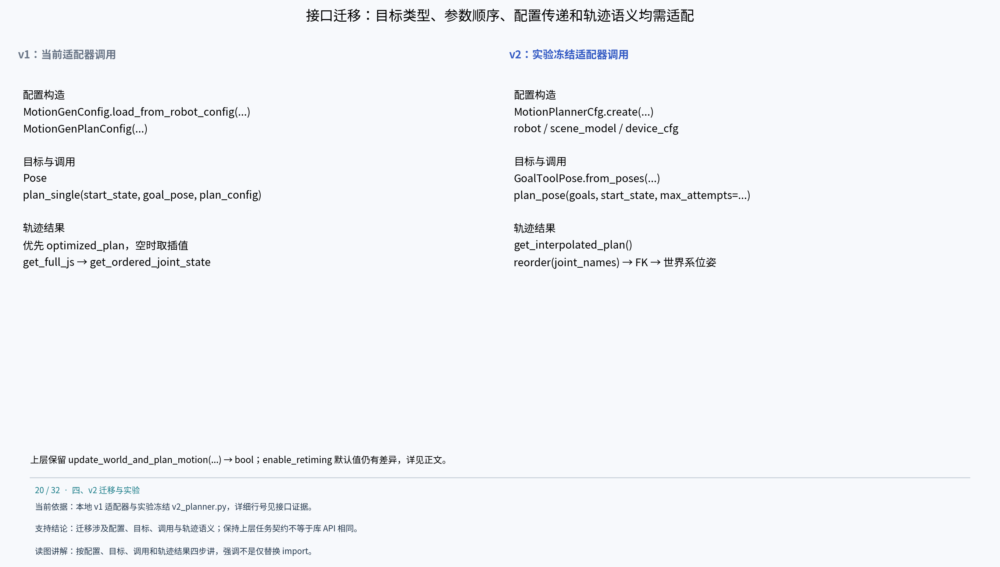
展开本页实验说明与讲解
当前依据：本地 v1 适配器与实验冻结 v2_planner.py，详细行号见接口证据。
支持结论：迁移涉及配置、目标、调用与轨迹语义；保持上层任务契约不等于库 API 相同。
读图讲解：按配置、目标、调用和轨迹结果四步讲，强调不是仅替换 import。
重点指出 plan_single 与 plan_pose 不仅名称不同，参数顺序和目标容器也不同。v2 读取插值轨迹并按关节名称重排；上层仍返回规划成功布尔值，不意味着底层结果语义完全一致。
下一页：13-v2-adapter
21 / 32 · 四、v2 迁移与实验
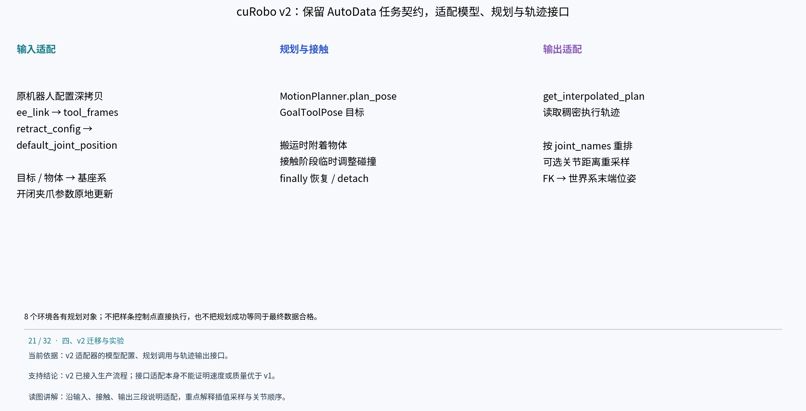
展开本页实验说明与讲解
当前依据：v2 适配器的模型配置、规划调用与轨迹输出接口。
支持结论：v2 已接入生产流程；接口适配本身不能证明速度或质量优于 v1。
读图讲解：沿输入、接触、输出三段说明适配，重点解释插值采样与关节顺序。
输入适配保证模型、目标和世界状态使用正确表示；接触处理保证临时碰撞修改能够恢复；输出适配保证控制点不会被误当执行采样。任何一段出错都可能影响成功率与末态质量。
下一页：29-v2-protocol
22 / 32 · 四、v2 迁移与实验
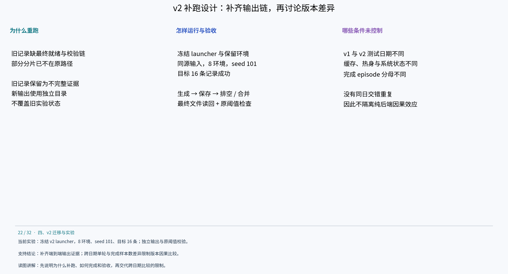
展开本页实验说明与讲解
当前实验：冻结 v2 launcher，8 环境、seed 101、目标 16 条；独立输出与原阈值校验。
支持结论：补齐端到端输出证据；跨日期单轮与完成样本数差异限制版本因果比较。
读图讲解：先说明为什么补跑、如何完成和验收，再交代跨日期比较的限制。
旧 v2 记录缺少完整 output_ready 与最终校验链，且部分分片不在原位置，因此没有把旧记录当作成功交付。新重跑使用保留的环境、冻结 launcher 和原校验阈值，保存到新目录，未改阈值或挑掉失败数据。
下一页：14-v2-result
23 / 32 · 四、v2 迁移与实验
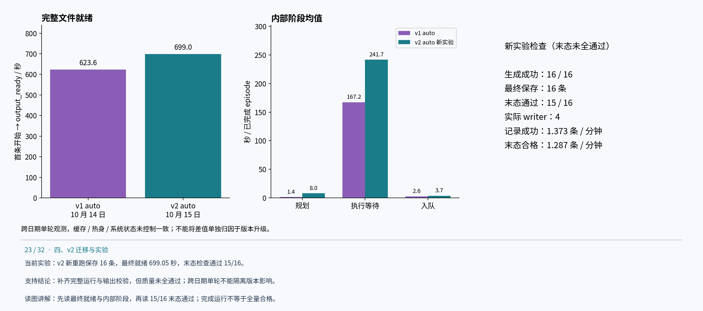
展开本页实验说明与讲解
当前实验：v2 新重跑保存 16 条，最终就绪 699.05 秒，末态检查通过 15/16。
支持结论：补齐完整运行与输出校验，但质量未全通过；跨日期单轮不能隔离版本影响。
读图讲解：先读最终就绪与内部阶段，再读 15/16 末态通过；完成运行不等于全量合格。
未通过项是 demo_2 的末态角速度 0.8538 rad/s，超过 0.5 rad/s；位置及线速度检查并不能替代角速度条件。检查器返回失败，报告应保留该事实；读回和末态验收也不等于逐帧物理重放。
下一页：21-version-evidence
24 / 32 · 四、v2 迁移与实验
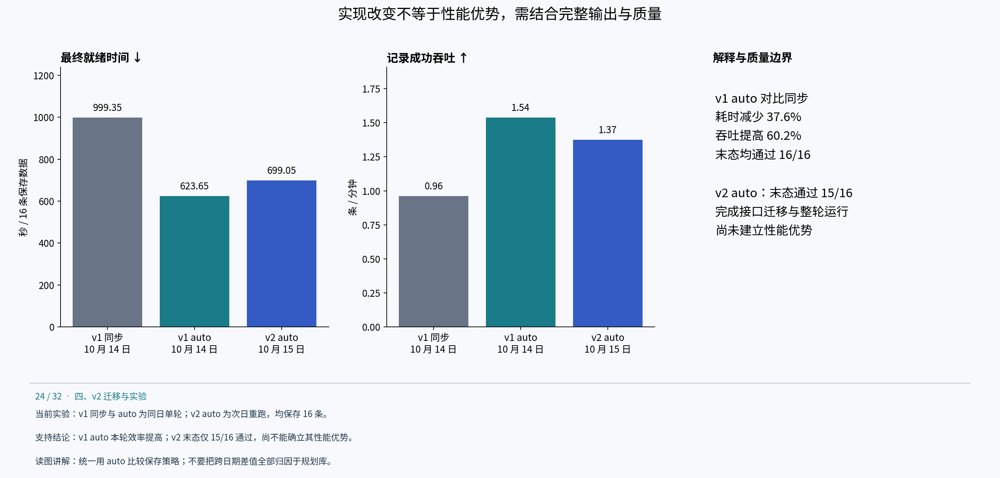
展开本页实验说明与讲解
当前实验：v1 同步与 auto 为同日单轮；v2 auto 为次日重跑，均保存 16 条。
支持结论：v1 auto 本轮效率提高；v2 末态仅 15/16 通过，尚不能确立其性能优势。
读图讲解：统一用 auto 比较保存策略；不要把跨日期差值全部归因于规划库。
选 v1 auto 作为改进版代表，是为了与 v2 auto 保持相同的保存策略。这个选择减少一种配置差异，但无法消除跨日期、缓存和系统状态变化，也不能替代重复实验。
下一页：30-conclusions
25 / 32 · 五、结论与下一轮验证
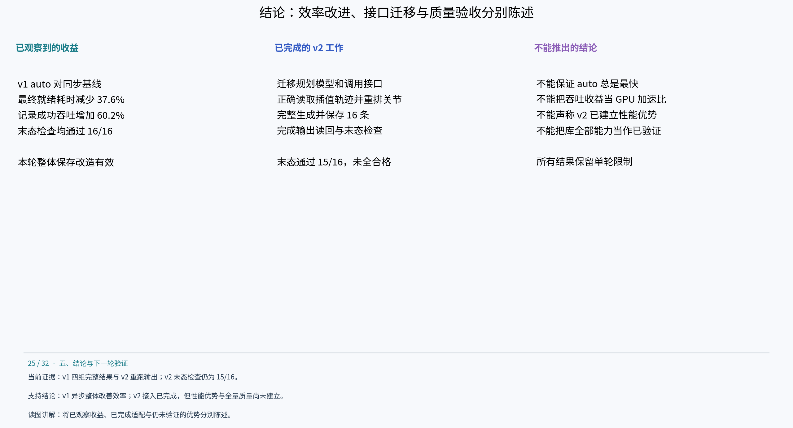
展开本页实验说明与讲解
当前证据：v1 四组完整结果与 v2 重跑输出；v2 末态检查仍为 15/16。
支持结论：v1 异步整体改善效率；v2 接入已完成，但性能优势与全量质量尚未建立。
读图讲解：将已观察收益、已完成适配与仍未验证的优势分别陈述。
用三个独立句子收束：保存改造在本轮提高效率，v2 已完成接口迁移和整轮输出，v2 的质量与性能优势尚未确立。不要将第一项结论套用为第三项的证明。
下一页：31-next-experiments
26 / 32 · 五、结论与下一轮验证
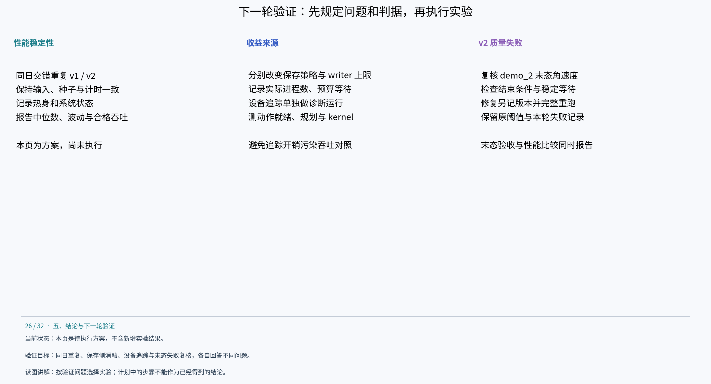
展开本页实验说明与讲解
当前状态：本页是待执行方案，不含新增实验结果。
验证目标：同日重复、保存侧消融、设备追踪与末态失败复核，各自回答不同问题。
读图讲解：按验证问题选择实验；计划中的步骤不能作为已经得到的结论。
先按相同输入、种子和计时边界做同日交错重复，报告中位数与波动；再分别改变 writer 上限或保存实现，记录实际进程数。GPU 追踪另开诊断运行，防止追踪开销混入主要吞吐比较。末态失败修复应另记版本并重跑，保留本轮原始结果。
下一页：08-flow
27 / 32 · 附录、补充机制与历史实验
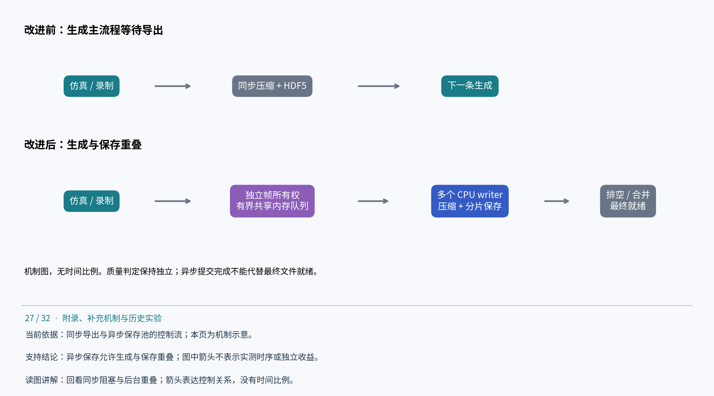
展开本页实验说明与讲解
当前依据：同步导出与异步保存池的控制流；本页为机制示意。
支持结论：异步保存允许生成与保存重叠；图中箭头不表示实测时序或独立收益。
读图讲解：回看同步阻塞与后台重叠；箭头表达控制关系，没有时间比例。
这页用于解释单条完成后主流程的去向。同步导出等待真实写入，异步导出移交数据后可以继续；完整生产结束仍需要排空与合并，因此提交完成和交付完成不能混同。
下一页：15-serial-parallel
28 / 32 · 附录、补充机制与历史实验
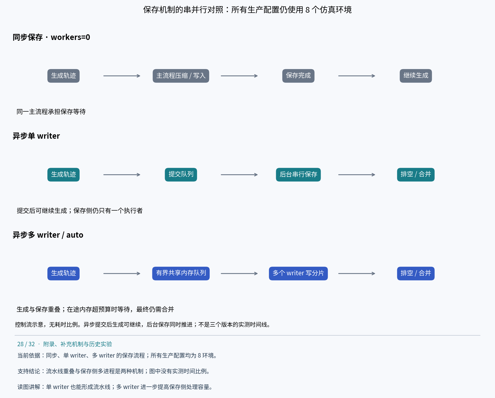
展开本页实验说明与讲解
当前依据：同步、单 writer、多 writer 的保存流程；所有生产配置均为 8 环境。
支持结论：流水线重叠与保存侧多进程是两种机制；图中没有实测时间比例。
读图讲解：单 writer 也能形成流水线；多 writer 进一步提高保存侧处理容量。
单 writer 的收益可以来自与生成重叠，即使保存侧仍串行。多个 writer 才提供保存任务之间的并行容量；若没有可重叠生成工作，单 writer 未必降低最终就绪时间。
下一页：18-parallel-comparison
29 / 32 · 附录、补充机制与历史实验
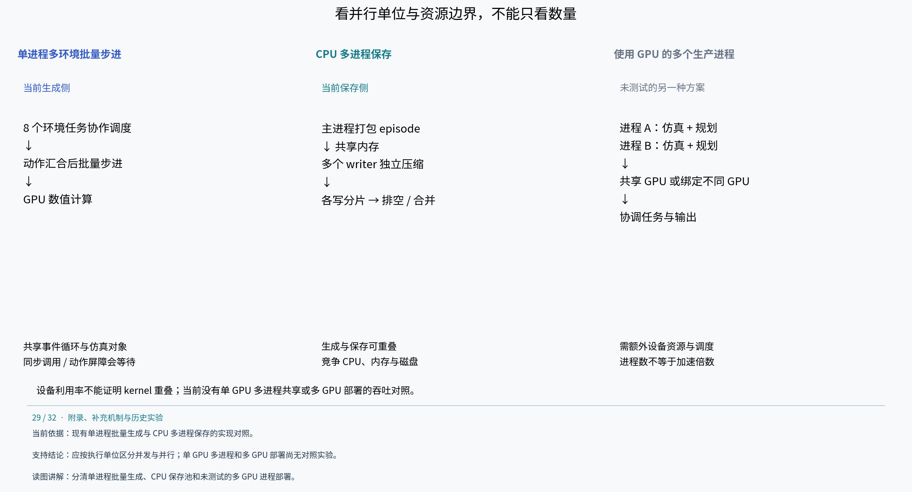
展开本页实验说明与讲解
当前依据：现有单进程批量生成与 CPU 多进程保存的实现对照。
支持结论：应按执行单位区分并发与并行；单 GPU 多进程和多 GPU 部署尚无对照实验。
读图讲解：分清单进程批量生成、CPU 保存池和未测试的多 GPU 进程部署。
本项目没有使用多个独立仿真进程共享 GPU，也没有做多 GPU 分配对照。这两种部署会改变设备资源和调度条件，不能用当前 CPU writer 实验推断其收益。
下一页：03-stages
30 / 32 · 附录、补充机制与历史实验
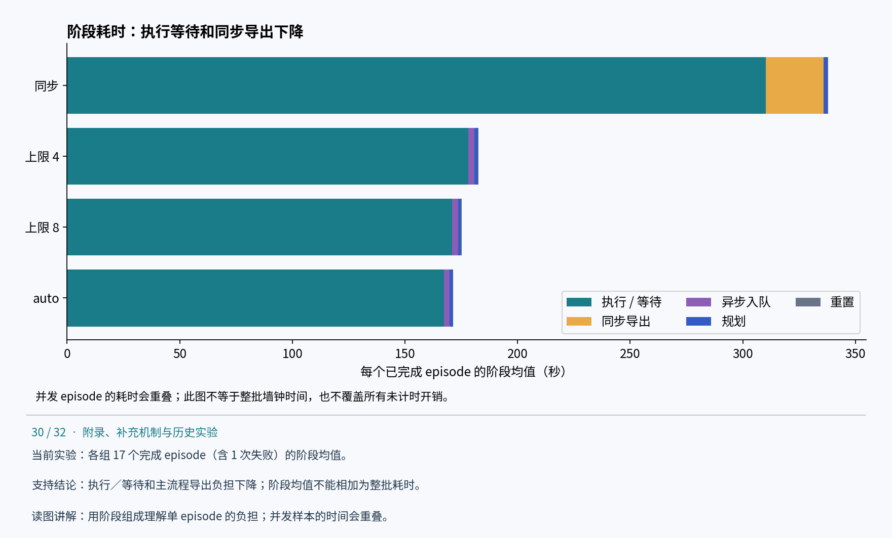
展开本页实验说明与讲解
当前实验：各组 17 个完成 episode（含 1 次失败）的阶段均值。
支持结论：执行／等待和主流程导出负担下降；阶段均值不能相加为整批耗时。
读图讲解：用阶段组成理解单 episode 的负担；并发样本的时间会重叠。
同一时间可能有多个 episode 处于执行或等待区间。该图展示平均 episode 的阶段构成，不是串行处理一个完整批次的时间分解；整批时间以最终就绪图为准。
下一页：06-history
31 / 32 · 附录、补充机制与历史实验
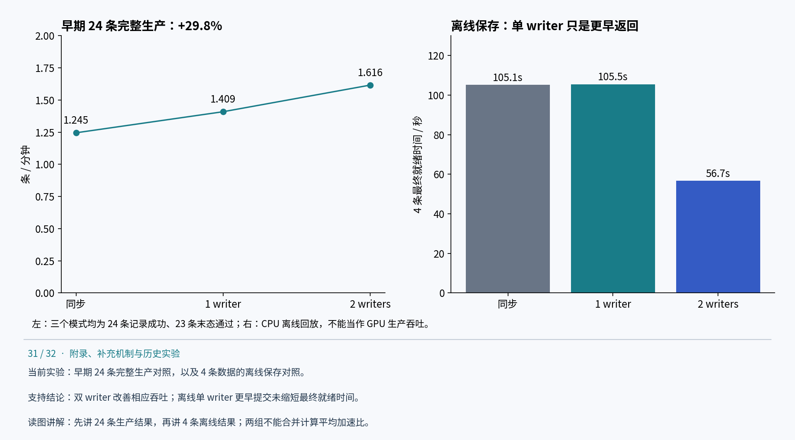
展开本页实验说明与讲解
当前实验：早期 24 条完整生产对照，以及 4 条数据的离线保存对照。
支持结论：双 writer 改善相应吞吐；离线单 writer 更早提交未缩短最终就绪时间。
读图讲解：先讲 24 条生产结果，再讲 4 条离线结果；两组不能合并计算平均加速比。
早期生产三组均记录成功 24 条、末态通过 23 条；离线保存只回放已有 4 条数据，没有持续生成可供重叠。不同样本量与质量分母应逐组交代，不能合并为更大的重复样本。
下一页：07-compression
32 / 32 · 附录、补充机制与历史实验
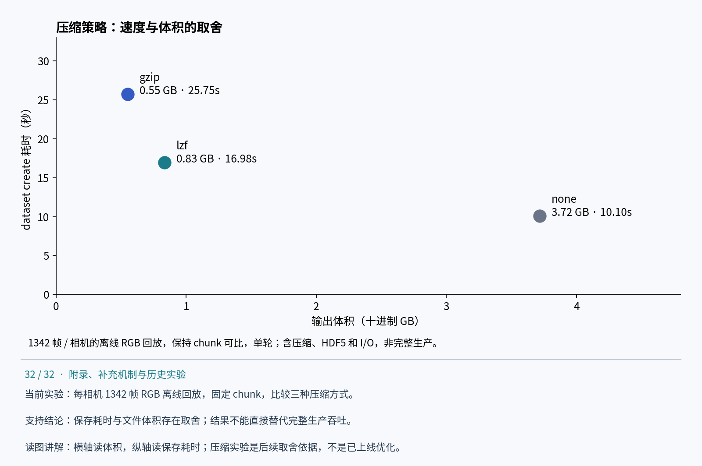
展开本页实验说明与讲解
当前实验：每相机 1342 帧 RGB 离线回放，固定 chunk，比较三种压缩方式。
支持结论：保存耗时与文件体积存在取舍；结果不能直接替代完整生产吞吐。
读图讲解：横轴读体积，纵轴读保存耗时；压缩实验是后续取舍依据，不是已上线优化。
保持 chunk 可比后，none 保存更快但文件更大，lzf 处于另一种速度与体积取舍。该实验没有测完整生产中的磁盘压力与最终质量，因此尚不能把更快的离线压缩配置列入已验证生产改进。
下一页：讲解结束；返回结论页回应问题。